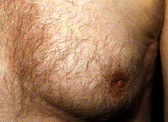
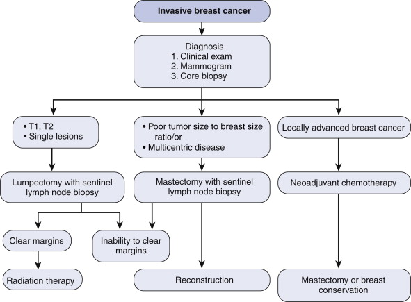
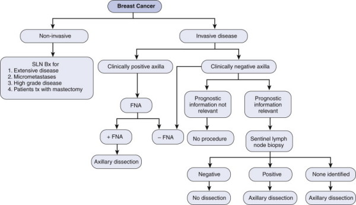
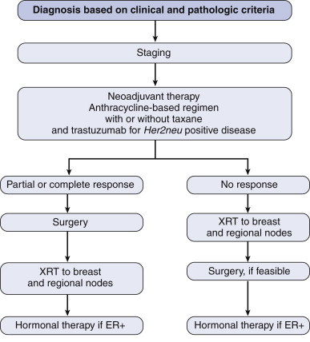
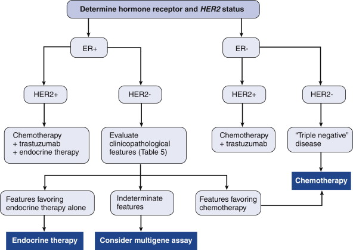
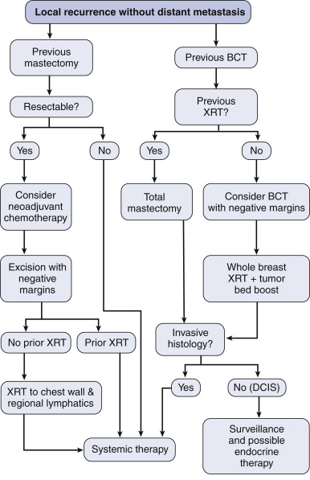
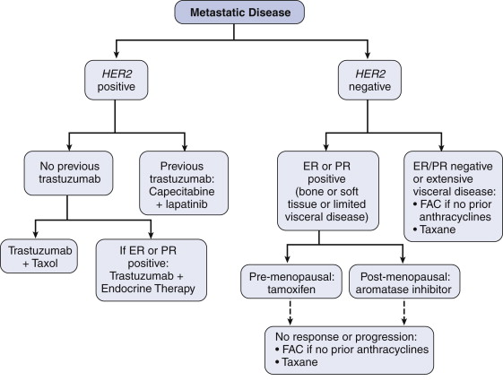

Breast Cancer
DEFINITION
Breast cancer
- phylloides discussed elsewhere.
Male breast cancer discussed at end.
Multifocal: >1 tumour, all likely to have arisen from the
original tumour. Likely to be in the same quadrant of the
breast.
Multicentric: >1 tumour; likely arising separately; likely to be
in different breast quadrants.
Early
Tumours <5cm, with or without LNs, but not if fixed
ie T1-2 , N0-1, M0
T3+
Advanced
Both locally advanced and metastatic
Locally advanced (5-10%) = invasion of tissues near breast (skin or
wall) (ie T4)
Includes:
- peau d'orange, fixation, ulceration
- inflammatory
- matted axillary nodes
top D I A B M
I M home
INCIDENCE
~1 in 13 women lifetime incidence in Australia.
Common cause of death in women between 35 and 54 years.
Increasing.
Sex
Male rates <1% that of female

Ethnicity
Highest rates in England and Wales.
Lowest in Thailand, Korea and China.
Risk Factors
Age
- most important everyday indicator
- 1:93 at 40, 1:50 at 50, 1:24 at 60, 1:14 at 70, 1:10 by 80.
- median age 60y
Estrogen
Early menarche (<11y).
First pregnancy after 35y of age.
Breast feeding is protective.
Delayed menopause (>53y).
Prolonged use of the combined oral contraceptive pill (>10y).
Prolonged use of hormone replacement therapy (>5y).
Obesity
Environmental:
Alcohol >2 drinks/day.
Genetic
~5% are genetically determined.
70% of BRCA1 and 55% of BRCA2 +ve women get breast cancer by 70y
(40-60% overall)
- tumor suppressor genes (produces breast cancer type 1
susceptibility protein; responsible for repairing DNA) but with
incomplete penetrance
- BRCA1 worse; invasive ductal cancer (can be medullary type),
higher mitotic rates, invade, lymph infiltrate, less likely to have
ER/PR receptors
- note that these only account for <2% of all breast cancers.
- also BRCA1 get ovarian cancers and colon; BRCA 2 get male breast
cancer, ovary, bladder, prostate, pancreas
--> always calculate a pedigree.
Associated with HNPCC, Li-Fraumeni syndrome, and Cowden disease.
Comorbidities:
Previous breast cancer.
- RR averages 3-4 in most studies.
- this depends on age at diagnosis of first primary.
- ie RR 5-6 for pts <45yrs, cf RR<2 for older pts.
- in absolute terms, 1% per year for younger women, 0.2% in older
pts.
Histologic abnormalities on biopsy
- see fibrocystic change card.
Ovarian cancer.
Radiation exposure.
DCIS, LCIS
Family History:
First degree diagnosed with breast or ovarian cancer (RR 1.5-3)
Particularly at an early young age.
Bilateral breast cancer in family = higher risk.
top D I A B M
I M home
AETIOLOGY
Tumour.
Somewhere In-between
Phyllodes tumour
Malignant
Ductal carcinoma in-situ
Pre malignant condition where the proliferation of malignant breast
epithelium confined to the duct system, not yet invaded through the
basement membrane.
Infiltrating ductal carcinoma
80% of invasive tumours.
Lobular carcinoma in-situ
Risk factor for development of infiltrating lobular carcinoma (10x)
rather than premalignant.
Infiltrating lobular carcinoma
20% of invasive tumours.
Non-invasive papillary carcinoma
Good prognosis.
Medullary carcinoma
Soft, well circumscribed, rich lymphocytic infiltrate.
Good prognosis.
Colloid carcinoma.
Mucoid carcinoma - good prognosis.
Tubular carcinoma - good prognosis.
top D I A B M
I M home
BIOLOGICAL BEHAVIOUR
Natural History
Carcinoma in situ
Lobular carcinoma in-situ (LCIS)
- risk-marker for breast cancer.
Ductal carcinoma in-situ (DCIS)
- premalignant condition
- accounts for 30-40% of screening mammogram pick-ups.
Invasive carcinoma
Lobular carcinoma
- 20% of invasive cancers.
Ductal carcinoma
- 80% of invasive cancers.
Prognosis
Depends on stage and grade (see below).
Nottingham prognostic index (NPI) - a score that combines size,
nodal status.
Inflammatory cancers
Aggressive and rare (1-6%)
- classically prognosis was poor (40% 5-yr survival), now improving
Mets to bone, lung, liver brain in that order.
Characterised by:
History: rapid onset breast change, heavyness, ache,
often covering 1/3 of breast; no features of sepsis
Physical: erythema, oedema or peau d'orange, ridging of skin,
often lymphadenopathy
- skin may be pink to purple, erythema often accompanied by warmth
- a mass is often not palpable (>30%)
- nipple changes include inversion, retraction and
flattening.
Imaging: skin thickening, diffuse density increase, axillary
lymphadenopathy
Biopsy: carcinoma confirmed; often dermal lymphatic invasion.
Diagnosis
Clinical as above; important to differentiate from mastitis,
dermatitis, locally advanced breast cancer.
- most will have normal WCC and will not be febrile.
Baseline imaging (mammography) important, but changes may be subtle.
- increased density, thick skin, trabecular distortion.
USS for facilitating biopsy and evaluating nodal basins.
Biopsy for diagnosis
- either percutaneous core biopsy of parenchyma, or skin biopsy or
both.
--> typically ductal Ca type with dermal lymphatic invasion
(latter not reqd for dx)
--> standard tumour markers, ie estrogen, progesterone, HER2neu;
more than half overexpress epidermal growth factor receptor,
including HER2neu; accounts for early and aggressive spread.
CT and bone scan, baseline bloods and LFTs. PET scan for
indeterminate areas.
top D I A B M
I M home
MANIFESTATIONS
Symptoms
Local
A firm or hard lump felt in the breast.
Not usually painful, but may be some discomfort, especially prior to
menstruation.
If untreated the cancer may ulcerate through the skin producing a
foul-smelling ulcer.
Nipple discharge.
Systemic
Weight loss, malaise.
Metastatic
Bone pain.
Lung/ liver/ brain symptoms.
Signs
Observe
Examination must be performed in a warm private environment with
good light and a chaperone.
Arms at side, raised, on hips.
Look for colour change, dimpling, contours, and nipple changes.
Palpate
Patient supine, use the flat of the hand.
Assess all four quadrants, the central area and the axillary tail.
Fully assess the characteristics of any detected lumps.
Examine the other side.
Nodal basins.
Axillary & supraclavicular regions.
40% false negative on examination.
30% false positive on examination.
Other
Chest.
Liver.
Axial skeleton.
top D I A B M
I M home
INVESTIGATIONS
1. Is there a discrete palpable lump
If there is, full triple assessment is required.
2. If this is a breast cancer, how advanced is the disease?
This allows tumour staging and the development of a treatment plan.
Triple Assessment:
Clinical assessment, imaging, FNA.
With triple assessment the accuracy of diagnosis is up to 99.6%.
Clinical assessment
- history, risk factors, examination.
Mammogram
CC (cranio-caudal) and MLO (medial lateral oblique views).
Picks up smaller lesions - present ~ 9 years.
Screening recommended for women >40 years.
Approximately 30% of cancers detected by screening.
Used for women >30 years - need two views of each breast.
Radio-opaque breast mass - stellate or well circumscribed, tissue
asymmetry, microcalcification, skin thickening and nipple
retraction.
Sensitivity 86%, specificity 90%.
Misses up to 40% Ca <50y, 10% Ca >50y.
False positive 11%.
Digital mammography has numerous advantages and should be preferred.
Ultrasound
Especially useful in younger women (<35) where breast parenchyma
is dense.
Solid vs cystic.
Can confirm the benign features of a fibroadenoma.
Cyst -> black fluid centre, shadowed edges.
Benign -> homogenous, opaque, regular shadow, margins, oriented
horizontally in tissue plane.
Malignant -> heterogeneous, irregular, infiltrating, towering
lesion (grows vertically).
Sensitivity 82%, specificity 85%.
MRI
Screening for high-risk subgroups.
Fine needle aspiration
Can be performed in the clinic and reported immediately.
A 23 gauge needle is used in a 10 mL syringe holder.
C1 - inadequate epithelial sampling.
C2 - benign.
C3 - atypical probably benign.
C4 - suspicious of malignancy.
C5 - malignant.
If FNA is negative but clinical and radiologic findings suggest
malignancy proceed to a core biopsy.
(May have missed malignant cells with the FNA).
But in reality --> always just do a core.
Sensitivity 95%, specificity 95%, false positive 0.2%.
Core biopsy
Performed under local anaesthesia with a wide-bore needle (14G).
Procedure of choice; provides tissue for histology.
- therefore can differentiate DCIS from invasive Ca.
- suitable for prognostic assays
- receptor status can be assessed.
Open biopsy
Suitable when core biopsy fails or when any discordance.
May be performed even if all other modalities suggest that the
malignancy is benign.
Especially in women over 35 years.
May be requested by patient even if findings are benign.
Palpable Nodes
FNA of the node -- > changes decision of 1-stage
Staging
No need for metastatic work-up in early breast cancer if
no clinical suspicion.
History, exam and routine diagnostic workup sufficient.
Perform USS axilla
If nodes are positive then can proceed as appropriate
TNM classification
Tis - Carcinoma in situ.
T1 - Tumour <2cm.
T2 - Tumour 2-5 cm.
T3 - Tumour >5cm.
T4 - Any tumour size with fixation to chest wall or skin.
N1 - Ipsilateral axillary nodal metastases (mobile).
N2 - Ipsilateral axillary nodal metastases (fixed).
N3 - Ipsilateral supraclavicular or internal mammary nodal
metastases.
M0 - No distant metastases.
M1 - Distant metastases.
Prognostic indicators
Axillary lymph node metastasis
Most important prognostic factor.
<2cm - <20% metastasise.
>5cm - >50% metastasise.
BCI rule: chance of lymph nodes = size of tumour x 1.5 + 6
Hormone receptor status
Estrogen receptor positive -> better prognosis.
Respond better to hormone therapy.
Cathepsin D - correlates with metastasis.
HER2 - human epidermal growth factor receptor overexpression is
associated with a worse prognosis but targeted therapy available.
Ki67 - proliferation index; higher = worse prognosis.
- protein associated with cellular proliferation; (>13% = worse).
Histological grade
Mitotic index = mitosis / hpf
Vascular invasion -> predictor of early local recurrence.
In situ Ca -> local recurrence common.
Margins of resection specimen.
Grade
Grade 1-3 (Bloomfield-Scarff-Richardson score)
Mitosis, nuclear pleomorphisms, tubule formation
- all graded 1-3, combine score (out of 9)
Bilaterality
1% chance/ year of developing Ca in opposite breast.
Or multicentric first Ca.
BRCA1 = worse
top D I A B M
I M home
MANAGEMENT
See also : locally advanced
breast cancer
Advising Patients / Families Re Family Hx
1. Risk profiling
With BRCA gene or strong family history
- 50-75% may get cancer; high risk.
- optimal strategy uncertain; family cancer clinic and genetic
testing can inform.
Not possible to screen genetically prior to surgery as it is time
consuming.
So clinically stratify into low, moderate and high risk of familial
breast cancer.
- high if 3+ relatives on same side with ovarian or breast; OR 2+
pts with diagnosis <40y, bilateral disease, 1 had breast and
ovary, Ashkenazi Jews
- moderate if 2+ relatives on same side with breast or ovarian; OR
1st degree relative diagnosed at <50y
- may elect more radical therapy
Specialists may consider chemo-prevention or risk reducing
mastectomy
2. BRCA Screening
Based on risk (>8x by age 50; start at age 30 including MRI)
- moderate risk (4x by age 50; start at age 40)
- low risk (usual mammography)
Annual examination, mammography + USS (if dense), and +/- MRI (in
younger females <50, RCTs = effective at identifying cancers at
an early stage).
- most sensitive but expensive; BRCA 1 and 2.
Regular surveillance for ovarian Ca
3. Prevention
NSABP-P1 and P2 trials
Tamoxifen and faloxifene decrease incidence of breast cancer in
high-risk pts including BRCA1 and BRCA2 +ve
And those with a strong family history
Women with Lobular carcinoma in situe and atypical ductal
hyperplasia could also benefit from better chemoprevention.
Risk-Reducing Mastectomy?
98% risk reduction; obviously very effective strategy
- no operation removes all risk
- preservation of nipple-areolar complex = slight remaining risk
only.
Only offered if lifetime risk >25%
- risk increases with age; 50% by 50
Also bilateral oophorectomy; reduces risk of breast and ovarian Ca
in BRCA1/2.
Surgery
Principles
1. Management of invasive disease is much less controversial
than treatment of noninvasive disease.
2. Most early stage breast cancers should be treated
with breast conservation, lumpectomy and radiation.
- usually need radiotherapy unless elderly and frail,
estrogen-receptor-positive
Contraindications to breast-conserving therapy
Clinical and pathological factors
- Advanced breast cancer
- Large or central tumours in a small breast.
- Inability to undergo radiation therapy.
- Multicentric or multifocal disease.
- Patient preference
- Persistent +ve margins after BCS.
- Collagen vascular disease, scar badly
- Widespread indeterminant microcalca (makes mammogram f/up
difficult)
- Strong family hx e.g. BRCA
Relaive:
- large cancer size relative to breast size; 10-20%
Algorithm for invasive breast cancer

Lumpectomy
Technique
1. Incision directly over site of tumour
- should be curvilinear to reflect the skin tension lines of the
breast.
- radial scars when tumors located in medial or infra-areolar breast
aspects
- avoid tunneling to the the breast; accurate incision is important;
best cosmesis and facilitates radiotherapy targeting
2. Excise tumour with adequate margins
- i.e. 2-3mm of microscopically free tissue.
3. Handle tissue carefully in OR to preserve integrity of tissue and
to define orientation correctly.
- e.g. 2-point orientation system
4. If there is any question (or even routinely), empirically take a
rim of additional tissue from tumor cavity, incorporating all
margins, submitted separately to pathologist
- provides pathologist with a clear margin to subject to crush
irregularity
--> reduces re-excision rates substantially.
5. Place microclips to delineate the tumour cavity for the
radiotherapy team.
6. Close
- two layered skin closure; tension-relieving dermal suture and 3-0
monocryl to skin
- Usually do not need drains in the dead space
- large defects resulting in cosmetic problems may need some
re-approximation; often not.
What is the evidence for BCS?
Now 6 trials; e.g. NBABP-B06
Survival equivalence.
- but LR rates differ: slightly higher with BCS (maybe 14% vs 10%)
- without radioRx, this would be more like 35% LR vs 10%
- hence radioRx must accompany BCS, and together are considered BCT
Not significant enough difference to impact on survival, at least to
power of studies.
Exceptions to Radiotherapy
Age >70, ER+ve small tumours <2cm
on Tamoxifen.
Ie very low risk situation
Avoiding radioRx modifies LR only slightly from 4% to 1% and so may
not be worth it given side effects
Co-localization options for impalpable lesions
Hookwire
Carbon particles
USS intraop by surgeon
Margins?
Any positive margin generally acceptable if having Radio
<2mm = "close margin"
Interpret margin significance with full tumour and patient info
- e.g. if young age, large front of close margin, may consider
re-excision
Mastectomy
Principles
Making a comeback
- genetic testing
- improved skin-sparing and nipple-sparing methods;
Consider oncologic and cosmetic principles in tandem.
- depends on accurate core biopsy to guide approach.
Technique
1. Incision
2. Develop skin flaps
- important to develop flaps proportionate to breast size and body
habitus
- skin, subcut tissue and fascia sit above breast glandular tissues
3. Dissect superficial to fascia layer anteriorly
- and include pectoralis fascia posteriorly with the
dissection.
- respect the anatomical boundaries of the breast and do not
interfere with the infra-mammary fold, which would compromise the
cosmetic outcome.
Indications for radiotherapy after mastectomy
1. Tumour >5cm
2. Axillary nodes >3
What is a Halstead Radical Mastectomy?
Breast, pecs, axillay dissection
- modified = leave pecs
NSABP B04 trial = no benefit for radical vs modified
Nipple-Sparing Mastectomy
Principles
Same operation as skin-sparing mastectomy
Reconstruction; may alter perceived loss to patient while providing
oncologically safe mastectomy with a good cosmetic outcome.
Outcomes similar to conventional mastectomy
- local and systemic recurrence reflect tumour biology rather than
skin preservation.
Indications
Tumours <4.5cm
Tumours 2.5 cm+ from aerolar edge or 4cm from nipple center and no
involvement of NAC
- including no bloody discharge or Paget's disease
- assessed clinically and with imaging.
Inflammatory breast cancer is an absolute contraindication.
Technique
Remove breast through a lateral radial incision of 6cm in
length, at least 2cm from edge of areola
- or even an infra-mammary fold incision for small breasts
Standard anatomical mastectomy borders utilized.
Thin slice of tissue through base to establish a true margin.
No need to core out the nipple duct bundle
- because cancers originate in the terminal duct lobular unit and
only 9% of nipples contain any of these.
- and else may get nipple necrosis; bad outcome.
Sentinel node access through a separate axillary incision.
Immediate reconstruction
- with autologous free flap, tissue expander or implant.
Outcomes
Further research still needed in this space to ensure safety and
clarify validity.
Reconstruction
All women should be offered opportunity for reconstruction.
Ideally should be offered immediate reconstruction
- even if this is temporizing tissue expander; starts the
reconstruction process.
Implants and autologous transfers are the major methods
- deep inferior epigastric perforator (DIEP) flap = preferred for
better cosmesis and less abdo wall morbidity.
- transverse rectus abdominus muscle (TRAM) flap = simpler
Locally advanced disease with post-mastectomy radiation may limit
options.
- tissue expander until all treatments ceased.
Axillary Algorithm

Suspicious nodes
- image and FNA.
- imaging = distortion of architecture, loss of hilum
Sentinel Lymph Node Biopsy
See notes
If +ve?
In 40-60% that node will be only +ve one.
- doing completion ALND is controversial; jury still out.
Many will do, but some data saying no need.
Z11 study
Prospective study on axillary clearance
1-2 +ve nodes on SLNB
- randomized to alnd or no alnd
- all had lumpectomy and breast rads
- 58% had chemo; 40% hormonal; so vast majority of both groups had
systemic therapy.
- LR and OS at 6y = NS
So no strong evidence for completion ALND.
Axillary Dissection
See notes
Level II
Skip Mets
Alternative route to L3 through inter-pectoral nodes under pec
major
Micromets
<1mm; detected immunohistochemically
--> can be treated as node -ve.
But bring up to MDT.
Non-Invasive Breast Cancer
See DCIS notes
Inflammatory Breast Cancer
Staging
Most have spread to axillary nodes at diagnosis
Without distant spread is stage IIIB (T4d,N0-3,M0)
Need a thorough workup for distant mets: FBC,LFTs, whole-body bone
scan, CT chest abdo, pelvis with IV contrast.
- (FDG-PET for indeterminate lesions)
Further Ix as directed by those.
Multimodal therapy

1. Pre-op (Neoadjuvant) Chemotherapy
Few specific studies; regiments are anthracycline-based, +/-
taxane
Taxanes are mitotic inhibitors; radiosensitizing; higher response
and remission.
Trastuzumab (Herceptin), monoclonal antibody directed at HER2neu
oncogene added if positive (not with anthracycline; cardiotoxicity)
Monitor response; if not progressive move on.
- response is prognostic, especially if strong response; 86% have a
response.
2. Pre-op Planning
Offer mastectomy
Monitor clinically for response
3. Response --> Surgery
Operate 3w after chemo to allow cytotoxic effects to subside
Modified radical mastectomy or total mastectomy with complete ALND
(levels 1-2; 3 only if grossly involved)
SLN not recommended; unacceptably high false -ve rate in
inflammatory breast Ca.
Resect to negative margins if possible
- avoiding skin flap tension at closure; may need an autologous skin
flap to facilitate closure; reconstruction delayed 6-12m
4. RadioTx
Recommended for local control regardless of chemotherapy response.
Before surgery if not responding to neoadjuvant therapy.
Else after surgery
B4 study
Mastectomy patients; ?positive axillas
No overall further benefit for axillary radiotherapy or alnd vs no
axillary dissection
--> Routine ALND after a +ve SLNB cannot be supported by
available evidence
5. Hormonal / MAB Adjuvant
Trastuzumab (Herceptin) for a full year if HER2Neu positive
Tamoxifen if premenopausal, else aromatose inhibitor
Locally Advanced Breast Cancer
5y survival 50%
Neoadjuvant therapy.
~All locally advanced breast Ca = chemorads
- higher initial response
There is no role for SLNB in locally advanced breast Ca
- becomes inaccurate if tumour >5cm; unproven.
- go straight to clearance.
ER/PR/HER2 management as usual
- chemo us. only if hormone therapies -ve
-->MDT
Role of Surgery
If response adequate, mastectomy and axillary dissection
Adjuvant Therapy
Systemic therapy should be considered for all women with invasive
breast cancer
- includes chemotherapy, targeted therapy, hormone therapy, or
various combinations.
Patient and Disease Considerations
Patient factors: age, menopausal status, general health
condition, tumour prognostic factors
Disease factors: tumour size, lymph node status, histology, ER/PR
status, Ki67 and Her2/neu status.
Endocrine therapy
See breast cancer target notes
Adjuvant Chemotherapy
1. Anthracycline-based regimens have been standard; on basis
of efficacy and tolerability
- but now controversial; longevity of breast cancer survivors
have bought toxic effects on heart and leukemias into focus.
2. Taxanes emerged and well validated in multicentre
studies.
- significant improvements in disease-free survival and overall
survival.
Targeted Therapies
See breast cancer target notes
Radiation
Standard of care for most invasive and DCIS tumours treated with
lumpectomy
Involves 6w of external whole breast radiation with a boost dose
to the tumour bed.
Consideration for Chemo pathway

(Clinicopathological features):
For pts with ER-positive, HER2-negative disease
Consider chemo if:
- low ER/PR levels
- grade 3
- Ki-67>30%
- >3 nodes
- Extensive peritumoral vascular invasion
- >5cm tumour
- patient wants everything dones
Consider endocrine therapy alone:
- High ER/PR levels
- Grade 1
- Ki-67<16%
- No peritumoral vascular invasion
- Tumours size <2cm
- patient wants to avoid chemo
Factors unhelpful in decision making
- grade 2
- Ki-67 16-30%
- 1-3 nodes
- tumour 2.1-5cm
Emerging Ablative Therapies
Driven by desire for minimally-invasive st
rategies / cosmesis that can be applied in an outpatient clinic
setting.
Probably represents the future of early stage breast cancer therapy
1. Cryoablation
Argon gas to freeze and destroy tumour deposits
- current approved for fibroadenomas; promising for tumours <2cm
Most promising current ablative strategy.
2. Radiofrequency ablation
Thermal energy from a metal probe, generated by high-frequency
alternating electric currents.
- currently approved for unresectable tumours
- under investigation for malignant breast disease
Thermal zone monitored under USS guidance
Promising technique to destroy tumour masses; index lesion destroyed
in 96% with few complications
- limitation is that tumour cells may extend beyond the imaged
boundaries and be missed by the guidance.
3. Interstitial Laser Ablation
Fibre-optic probe to apply photodynamic therapy from within the
target lesion
Under assessment.
Post-Treatment Surveillance
Risk of relapse related to tumour size and node status.
- 20-30% of node -ve vs 50-60% of node +ve will have a relapse
Slightly higher rate with breast conserving therapy (14%) vs
mastectomy (10%)
Local recurrence more common but some will also get distant
metastatic disease
- then largely a life prolongation and palliation exercise.
Most relapses occur within 5 years, especially within 3 years
- but need to be monitored life long as some can present 20y later.
1. History and physical
History and physical every 3-6m for first 3 years
- after 3m, lengthen this out to every 6-12m
Note changes in skin, appearance, nipple retraction, discharge.
Examine for masses
- be alert for atypical presentations with erythematous rashes or
nodularity in the scar.
In addition, self exam monthly (most detected this way).
2. Imaging
Diagnostic mammogram every 6 months.
- screening of contralateral breast.
Then yearly mammography
US of chest wall and nodal basins is not routine but may be helpful
if symptomatic
No role for routine MRI
3. Distant Disease
History for symptoms or lung, bone, CNS or abdominal mets.
--> investigate if suspected
But no routine role for chest imaging, bone scans, or
abdominal imaging
No role for tumour markers
4. Treatment Side Effects
Tamoxifen associated with uterine cancer.
Annual pelvic exams, and pts on aromatase inhibitors should have
annual bone density scans.
5. Abnormality detected?
Biopsy confirmation required.
- stain for ER/PR/HER2 status
--> determine if a new cancer or true recurrence.
Mammography of both breasts and USS of lesion and nodal basins.
- MRI if discordant findings.
Local recurrence associated with metastatic disease in >60%
--> full workup including CXR bone scan, CT / MRI of abdo/pelvis
--> PET indicated if unspecified abnormalities found.
Management of LocoRegional Recurrence
1. Recurrence after BCT
Mastectomy is standard.
Salvage BCT in highly selected patients, but radiotherapy strongly
recommended.
SLNB can be considered but investigational
- may be technically impossible, esp if previous radiotherapy or
extensive axillary dissection.
--> possible in 65-75% after BCT and 40-50% after mastectomy.
--> if axillary clearance previously performed, can still try but
node likely to be extra-axillary, need lymphoscintigraphy.
These patients will need systemic therapy.
2. After mastectomy
Ie 'chest wall recurrence'
- in skin, subcut tissue, muscle, or even bone.
Rates as high as 10-30% reported; can be reduced by post-mastectomy
radiation in selected patients.
As above, initiate a thorough search for distant disease
--> high rates of association
Negative prognostic indicators include:
- initial node-positive status.
- early recurrence (<2y)
Hugely variable survival from this point; months to years
Systemic chemotherapy is standard.
Consider surgery if completely resectable.
- Neoadjuvant chemotherapy followed by resection can be considered
if high-risk:
--> short disease-free interval, multiple nodules, marginally
resectable.
- With lymph node resection if nodal mets are found.

3. Nodal Recurrence
Rare after ALND.
Remains <1% in SLN era.
Also associated with high incidence of distal disease
If no other disease found on workup --> proceed to ALND
If other metastatic disease found --> chemo
Management of Metastatic Disease
1. Metastatic disease and intact primary tumour
Uncommon to present with mets at time of diagnosis; <10%
Now thought that there is a survival advantage with primary tumour
excision.
- this based on retrospective data; prospective proof awaited.
Bottom line: resect in highly selected patients, e.g.:
- few metastatic sites
- resectable primary
- stable disease / long disease-free interval
- high performance status.
2. Surgical management of distant metastatic disease
Stable IV breast Ca is incurable; palliation and life extension are
the goals
Advancing toward metastasectomy in highly selected patients with
modern chemotherapy
- but only can be considered if would render patient with no
evidence of disease (NED)
Median survival can be as long as years with good features (above)
Systemic therapy should be core to therapy:

Contralateral axilla metastasis
Rare. Differentials include occult primary of contralateral
breast with axillary mets, primary breast cancer in axially tail, or
mets from another primary cancer (e.g. lung).
Imperative that firm diagnosis established if possible.
Clinical presentation, tumor markers (ER/PR), HER2, histopath and
radiographic imaging must be considered.
Radiotherapy?
Palliative role e.g. in bone and brain mets
Controls pain and neuro symptoms (seizures, paralysis).
Bisphosphonates can also help with bone pain.
Notes on Chemo agents.
Three categories: endocrine, cytotoxic chemotherapy, targeted chemo
other than endocrine (e.g. Trastuzumab).
Cytotoxic regimens are now anthracycline based or taxane-based.
Anthracyclines
Include doxorubicin, 5FU, cyclophosphamide.
Inhibit toposiomerase and act as antimetabolites.
Usually administered in 4 cycles by infusion.
Cardiac complications - ejection fractions evaluated by echo before
initiation and monitored.
Taxanes
Very effective in metastatic breast cancer.
Usually added sequentially to anthracyclines
Taxanes include paclitaxal - target microtubule formation
Dose-limiting neutropenia; therefore smaller doses given weekly
Her2 negative
If ER/PR positive, then endocrine therapy, first up.
As usual, tamoxifen if premenopausal, aromatase inhibitor if
postmenopausal.
If no response, move to conventional chemotherapy.
If ER, PR negative and HER2/neu negative, then cytotoxic
chemotherapy is first line.
HER2 +ve patients = markedly improved results when trastuzumab used.
Her2-positive
Markedly improved results with trastuzumab
If no previous trastuzumab, use as a single agent or with taxane.
Or can combine ER/PR, trastuzumab.
MALE BREAST CANCER NOTES
Risk Factors
Us. in mid 60s.
Rising
Risk relates to estrogen / androgen balance
- obesity, cirrhosis,
- decreased testosterone production; testicular abnormalities or
loss, Klinefelter
Family history in 15-20% of patients.
- BRCA2 mutations predispose; important and present earlier with
aggressive disease
- if male breast cancer and one other in family, v. high risk of
BRCA2 underlying.
- BRCA1 = much lesser extent
--> role for screening and event prophylactic mastectomy in both
cases
- PTEN (Cowden) and MMR genes (e.g. MLH1) also investigated;
currently unclear
Radiation exposure.
Gynaecomastis is not a risk factor.
Pathophysiology
90% invasive ductal carcinomas;
10% DCIS (often papillary and cribriform types and low-intermediate
grade.
- male breast lacks terminal lobules so lobular cancer rarely seen
Inflammatory breast cancer rare but described
Male tumors are usually hormone-receptor positive (90%)
- and rates increase with age, as in females.
- nearly 80% are PR positive
- but only 25% over-express HER2-neu
Presentation & Investigations
Usually a painless subareolar breast mass.
- must be distinguished from gynaecomastia
--> Ca is harder, unilateral, fixed and non-tender
Nipple retraction, ulceration, bleeding and discharge are clues.
Examine regional nodes
Diagnostic mammography has specificity and sensitivity >90% in
males
- any discrete mass should be biopsied as per triple assessment.
Any palpable mass in the axilla needs US-guided FNA.
Bone scans / CT if suspect distant disease
Prognosis
Same as females
- tumour size (2-5cm = 40% higher death rate vs <2cm)
- node status (+ve = 50% higher death rate)
- histologic grade
- hormone receptor status.
At time of diagnosis:
- 60% have stage I-II disease
- 30% have stage III disease
- 10% stage IV
--> ie generally more advanced than in females.
Treatment
1. Mastectomy and SLNB / ALND.
- rare so studies on SLNB are lacking.
2. Lumpectomy and radiotherapy is an option, but most are located
deep retroareolar tissue, so can be difficult.
- must prioritise negative margins
3. Post-op radiotherapy?
- data lacking.
- often treated due to chest wall involvement.
4. Adjuvant therapy
- same as for females.
- data on aromatase inhibitors are lacking; questionable as
testicles produce estrogen independent of the aromatase pathway.
5. Follow-up
Increased risk of other primaries; close follow up especially
warranted.
top D I A B M
I M home